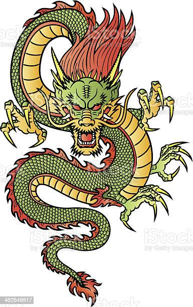

Na mitologia Chinesa os dragões chineses (também chamados de dragão de Long) participaram na criação do mundo e representavam boa sorte, prosperidade, esforço e dedicação, mas tambem era um status de poder, já que sua imagem era amplamente usada por imperadores, que inclusive eram considerados descendentes diretos dos próprios dragões.
Esses seres poderosos e místicos possuíam corpo de serpente, olhos de tigre, chifres de veados e bigodes de carpa e são divididos em celestiais, espíritos da terra, guardiões de tesouros e imperiais.
Seus mitos existiam antes mesmo da língua escrita na china e em seus contos existiam 4 dragões principais chamados “Os Quatro reis dragões” que cada um deles governava cada um dos 4 mares ( cada mar corresponde aos pontos cardeais”
De maneira resumida, segundo algumas fontes sobre a mitologia chinesa o primeiro dragão foi uma carpa que ao olhar fascinada para uma montanha e o quão alta ela era, desejou alcançar o topo para ver melhor o mundo, nadou por cachoeiras e correntezas e quanto mais subia, mais esticado e maior ficava a carpa e chegando ao topo e encontrou um lago sagrado, entrou e se transformou no grande dragão celestial.
Hoje em dia o dragão chinês se tornou um grande símbolo de cultura e tradição na china, sua imagem sempre presente em festivais como o festival do barco do dragão, onde confeccionam lindos barcos com aparência de dragão que desfilam pelas ruas anualmente no quinto dia do quinto mês do calendário lunar.